星衡 Alpha 不替代顶级投资人的判断，而是把“看大势、拆产业、等确认、控赔率、行仓位”结构化。系统压缩噪音、保留证据链，用 AI 与决策聚焦优化器把产业主线翻译成组合动作。 XingHeng Alpha structures the loop from thesis to evidence, odds, risk, and portfolio action.
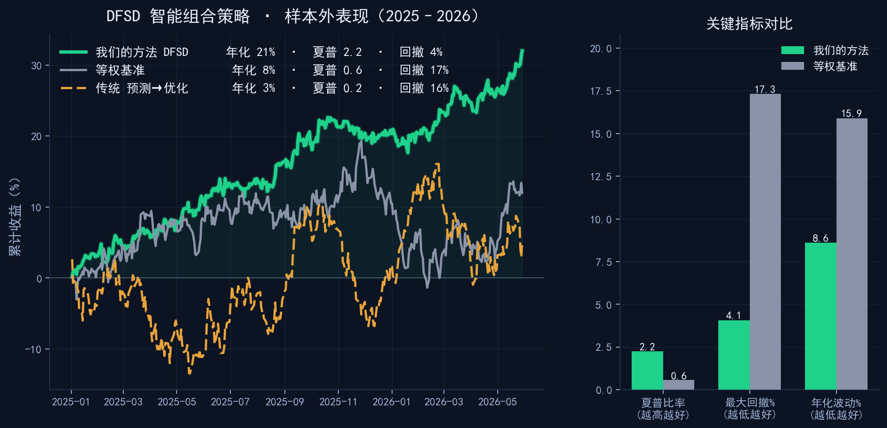
对趋势型产业投资人来说，真正有价值的不是更多噪音，而是更早发现半导体、AI 算力、智能汽车、先进制造、能源与气象等变量如何进入资产定价。For thesis-driven capital, value comes from seeing how semiconductors, AI compute, smart vehicles, manufacturing, energy, and weather variables enter asset pricing.
先判断什么变量值得长期跟踪Find variables worth tracking
保留来源、反例、验证指标和失效条件Preserve sources and invalidation rules
价格确认、赔率和风险边界共同决定动作Let confirmation and risk decide action
把宏观、供需、政策、产业链和价格反馈放进同一套命题框架。Connect macro, supply-demand, policy, chains, and price feedback into one thesis frame.
每个命题先写清楚反例、失效条件、回撤阈值和仓位上限。Every thesis stores counter-evidence, invalidation rules, drawdown triggers, and size limits.
不是只看命中率，而是先看错了亏多少、对了赚多少，再决定是否表达仓位。Not just hit rate: define downside and upside before taking size.
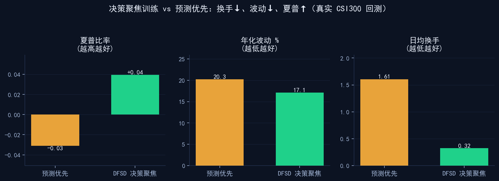
真实 A 股回测显示，决策聚焦训练能明显降低换手和波动。对重仓型投资人，少犯大错、少被成本吞噬，和抓住大机会同样重要。Real A-share tests show materially lower turnover and volatility. For concentrated capital, avoiding large mistakes and cost drag matters as much as catching large moves.
研究来源、价格确认、反例、失效条件和仓位动作被保存在同一条链路里。Sources, confirmation, counter-evidence, invalidation, and action are kept in one chain.
17 节点、138 张 GPU，含 8×H200，支持模型训练、回测和 Agent 策略迭代。17 nodes and 138 GPUs, including 8 H200s, support training, testing, and agent iteration.
端到端系统已在真实 A 股数据上跑通，验证重点是换手、波动、回撤和成本。The end-to-end system runs on real A-share data, with focus on turnover, volatility, drawdown, and cost.
已投稿 EMNLP：The Decision Gap；准备投稿 AAAI：DFSD 决策聚焦情景扩散与 CVaR 组合。EMNLP submission: The Decision Gap; AAAI in preparation: DFSD for decision-focused scenario diffusion and CVaR portfolios.
星衡 Alpha 时序引擎能帮助识别价格与量能变化，但系统不会把单一预测直接变成重仓，而会经过证据链、市场确认、赔率和回撤约束。XingHeng Alpha Temporal Engine helps read price and volume changes, but no single forecast becomes size without evidence, confirmation, odds, and drawdown rules.
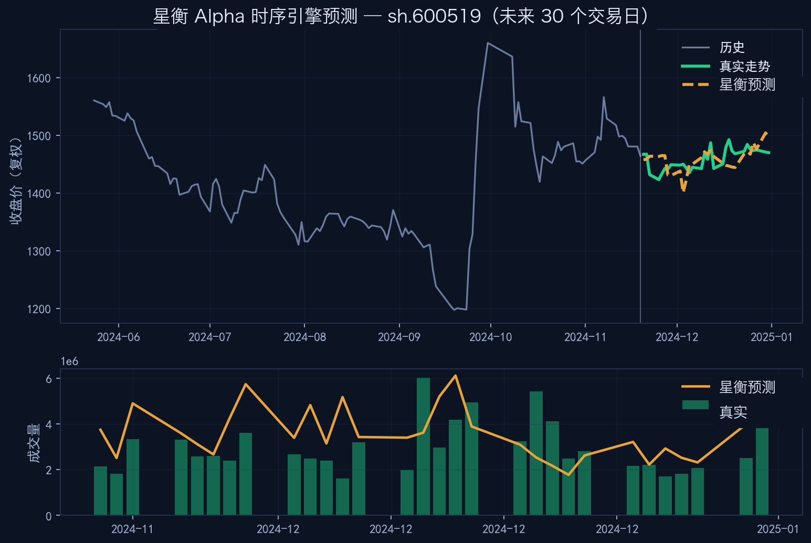
建仓、加仓、做 T、清仓不是“神奇买卖点”，而是证据链、价格确认、风险预算和交易成本共同作用后的动作记录。Build, add, T, and exit markers are action records produced by evidence, confirmation, risk budget, and cost control.
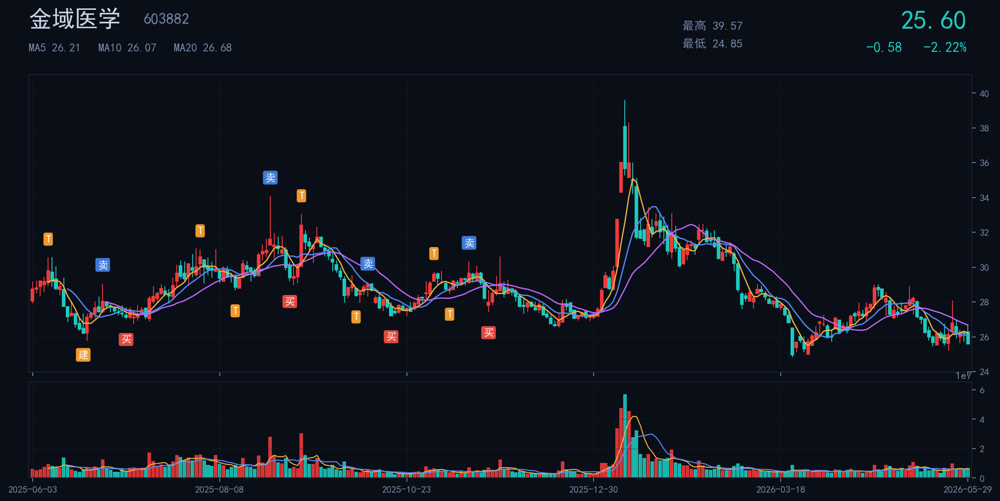
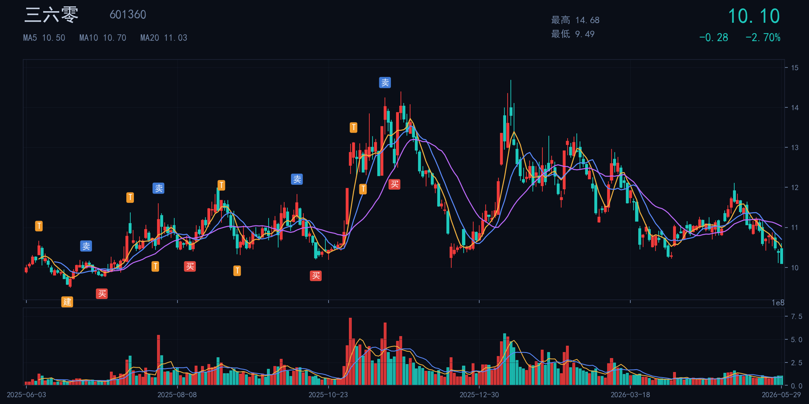
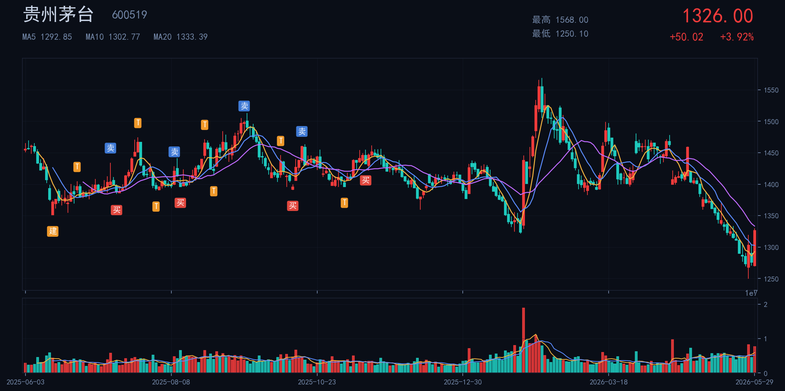
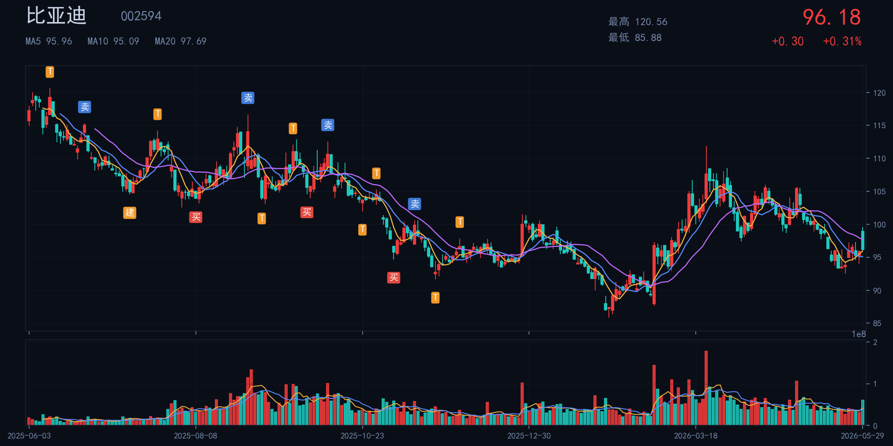
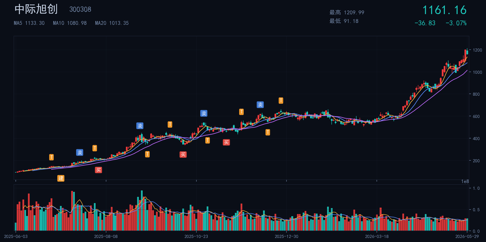
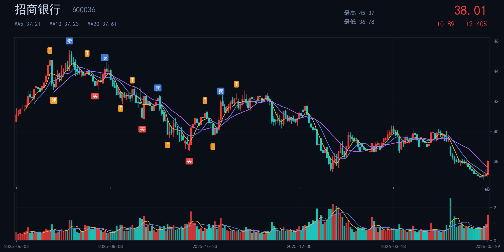
标注说明:建=建仓 买=加仓 T=做T降本 清/卖=减仓清仓Legend: 建 build · 买 add · T intraday-T · 清/卖 trim/exit
同一套引擎可以跟踪 NVIDIA、特斯拉、苹果、QQQ 等全球资产，把技术周期、资本开支、产业链迁移和价格反馈放在同一张图里。The same engine tracks NVIDIA, Tesla, Apple, QQQ and related assets, connecting technology cycles, capex, chain migration, and price feedback.
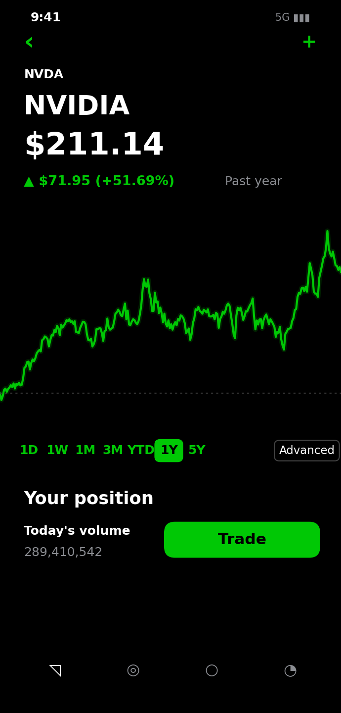
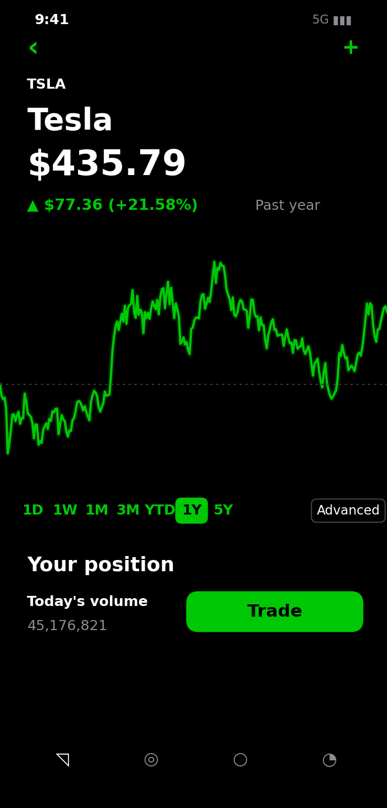
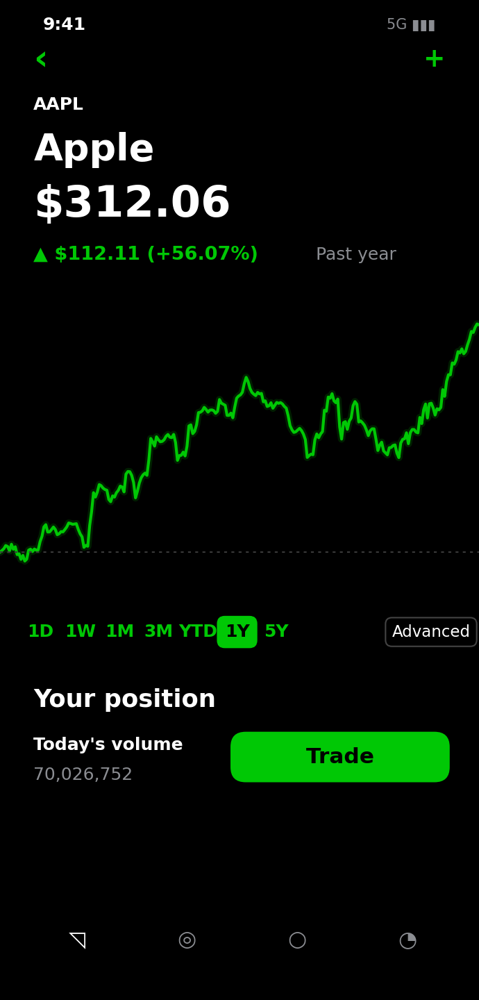
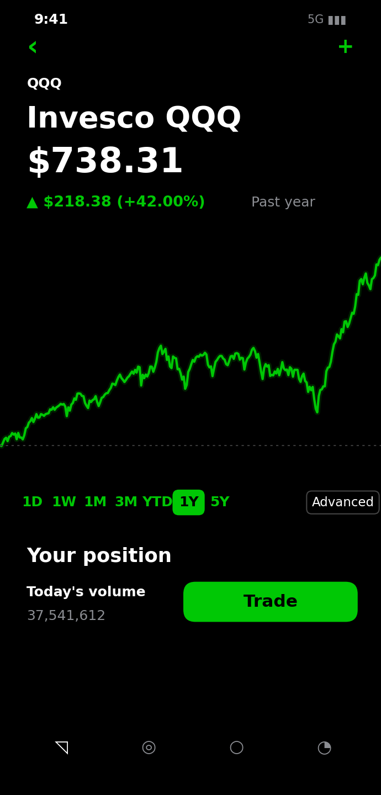
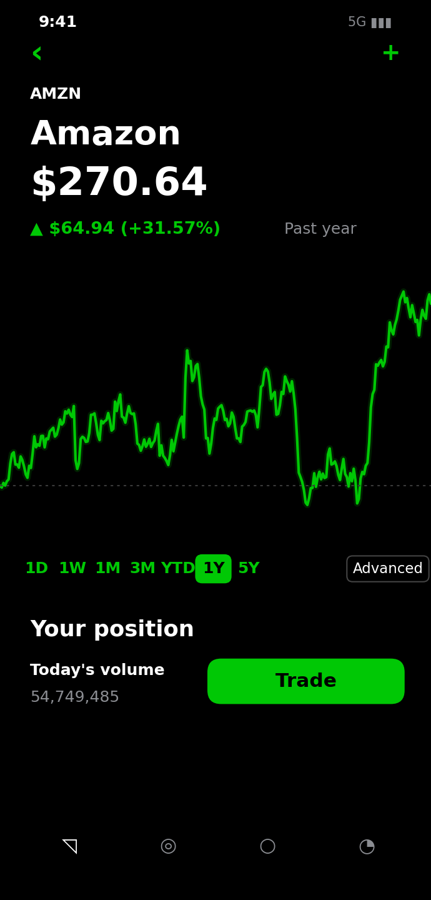
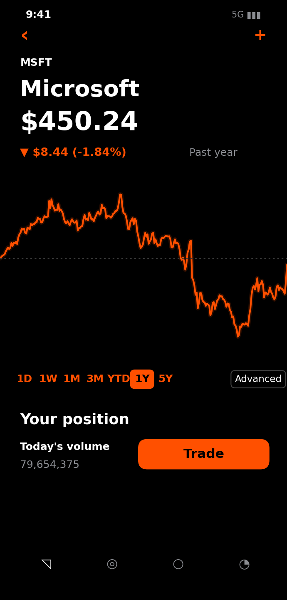
行情数据来自公开市场，截至 2026-05-29Market data from public sources, as of 2026-05-29
系统不替代判断，而是给判断一个执行接口：大脑维护长期命题、证据链和失效条件；小脑处理确认、仓位、风险、成本和复盘回写。The system does not replace judgment; it gives judgment an executable interface.
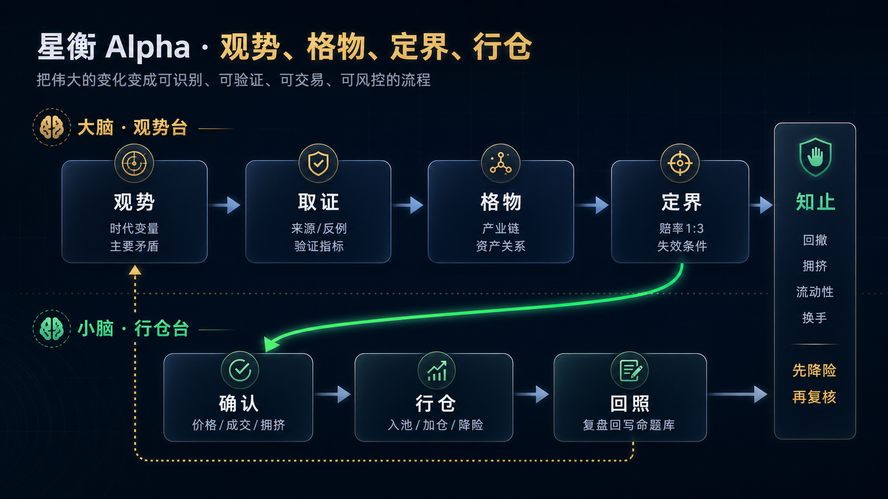
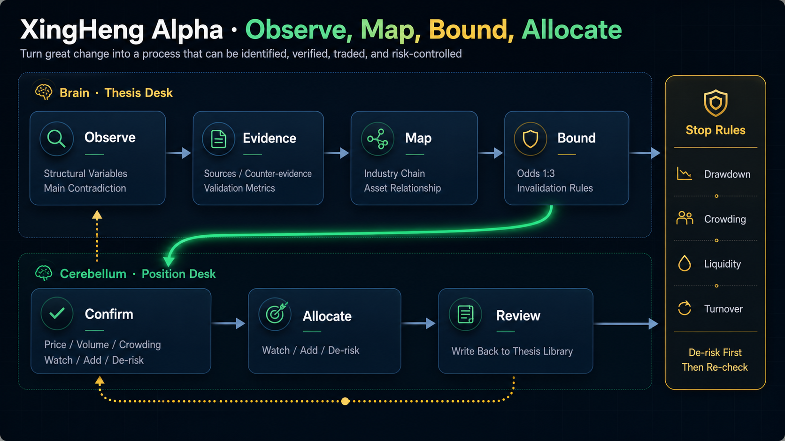
以 AI 算力、半导体或智能汽车任选一条主线，跑通证据链、资产图谱和行仓日志。Run one hard-tech thesis through evidence, mapping, and action logs.
接入天气、库存、运价、供需和价差数据，复刻期货时代的变量敏感度。Add weather, inventory, freight, supply-demand, and spread data.
用真实行情验证等待、加仓、降险、退出是否遵守赔率和回撤边界。Validate actions against odds and drawdown rules.
沉淀为服务小团队覆盖更多硬科技赛道的 Agent policy 基础设施。Build agent-policy infrastructure for small teams covering more arenas.
对期货出身的投资人，天气不是新闻，而是供需冲击、库存预期和价格波动的前置信号。星衡计划把气象数据接入 Agent policy 引擎，覆盖商品期货与天气指数保险。For futures-trained investors, weather is a leading signal for supply-demand shocks, inventory expectations, and price volatility.
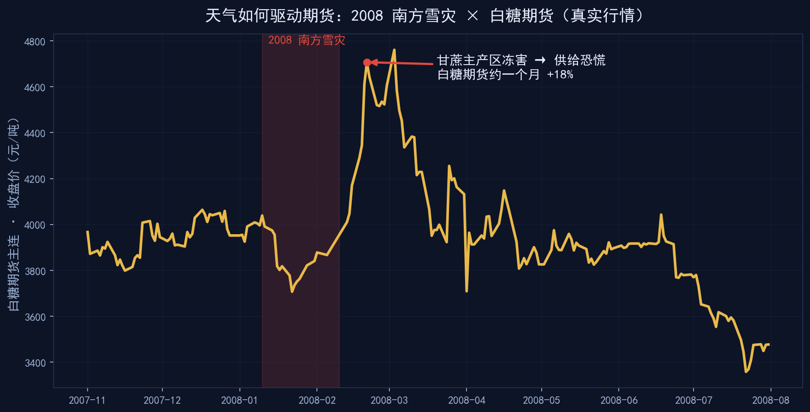
南方雪灾冻害甘蔗主产区，白糖期货约一个月大涨约 18%（真实行情）。这是“天气变量 → 供需预期 → 价格反馈”的样例。The snow disaster froze the sugarcane belt; sugar futures jumped ~18% in a month, showing weather-to-supply-to-price transmission.
寒潮、热浪、降雨和运输中断会提前改变农产品、能源、航运和库存预期。Cold waves, heat, rainfall, and logistics disruption can move agriculture, energy, shipping, and inventory expectations.
库存、价差、基差、运价和天气变量可以进入同一套情景扩散与风控框架。Inventory, spreads, basis, freight, and weather can enter the same scenario and risk framework.
天气指数保险定价高度依赖气象建模，可成为交易策略之外的可落地增长曲线。Weather-index insurance pricing depends on meteorological modeling and can become a practical growth line beyond trading.
这不是一个替人猜涨跌的工具，而是一套把长期判断结构化、把证据链留住、把仓位纪律执行到底的系统。适合用真实主线 POC 来验证价值。This is not a tool for guessing tomorrow; it structures long-term judgment, evidence, and position discipline.